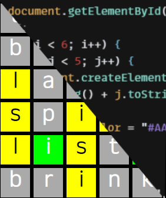

Wordle?
If you don't know what Wordle is chances are it's the distant future and all traces of Wordle are now cool novelties, or you haven't been on the internet in a while. Wordle is a game from 2021 developed by Josh Wardle. It revolves around guessing a five letter word in six guesses with visual clues to help you find out the word. For the sake of practice, I have remade this game with HTML, Javascript, and CSS. My version of the game is available here.

Playing Video Games
The pseudocode for my project would be, to constantly loop, inside that loop listen for audio with words, if those words are equal to a command, simulate button presses on my computer.

For example, I'd turn on the script and then yell at my computer, "WALK!", and it would hold down my W key for about 3 seconds.
How does it work?
To start, a computer needs to have a working microphone. The microphone typically has a small "diaphragm" inside of it. This diaphragm moves when it comes in contact with sound energy. These vibrations of the diaphgram usually move a magnet of sorts that create an electrical current. These electric currents are typically an analog signal. Your computer cannot really do much with the analog signal so it uses an algorithm to convert it to digital. This digital audio is now usable by something like a neural network or any other program designed to analyze your audio. With enough words, your audio can become a string of text ready to be used for whatever purpose you're using it for.